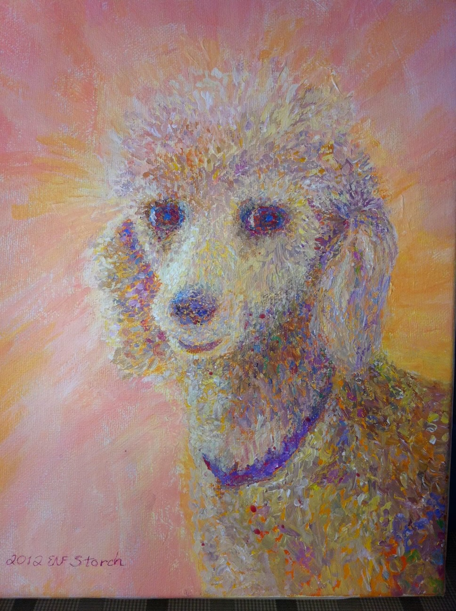

Bio
Noreen Findlan Storch, Instructor
Artist’s Statement
Noreen creates intricate, powerful landscapes and abstract works of art, infusing canvases with color and light which transcend the material plane and allow viewers to experience an intimate connection to Nature as energy. Noreen’s art reflects her deep reverence for the natural world and creative spirit.
Biography
An art educator and painter, Noreen Storch’s acrylic abstract and landscape paintings grace the walls of private collectors throughout the United States and Europe.
Noreen joined Sam Feinstein’s Manhattan painting classes in the mid 1970’s and studied with him for 20 years. Based on Sam Feinstein’s teachings, Cover-the-White was created by Noreen in 2019. She and her son launched a beta site in their studio in which translated to Zoom classes during the 2020 pandemic.
In 1995 Noreen joined the New York City Public School 87 art program as a volunteer teacher and ultimately joined the Board of Directors for the nonprofit off-shoot, Arts In Action VAP fifteen years later.
Designated the family artist at age two, Noreen began painting oil landscapes as a teenager in Westchester County, NY. She exhibited and accepted commissions throughout high school. At Syracuse University Noreen changed majors from fine art to art education. After college, Noreen worked as art director of an Atlanta ad agency then moved to New York in 1975 as in-house art director. Concurrently, she became a private fine art instructor to cognitively challenged adults.
Group shows include:
July 1963 | New Castle Recreation Center | Westchester County, NY
May 2002 | Cork Gallery | New York City
July 2003 | Liberty Museum | Liberty, NY
Sept 2003 | Common Ground | New York City
Oct 2003 | Cork Gallery | New York City
July 2024 | West Side Arts Coalition Vivid Memories | New York City
Private Collectors include:
Adam F., Denver, Colorado
Christine C., Atlanta, Georgia
Eugenia A., Bronx, New York
Robert E., Switzerland
See Examples of her Artwork below:

